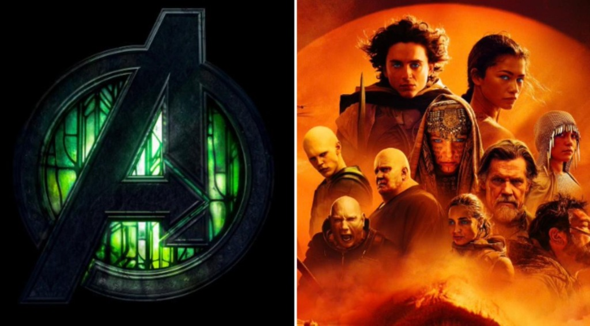
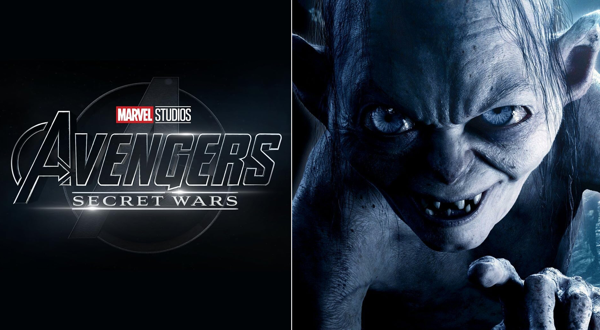

A Marvel Studios lança, consecutivamente, duas de suas grandes apostas. Em 17 de dezembro, chega aos cinemas Vingadores: Doutor Destino e um ano depois, em 17 de dezembro de 2027, Vingadores: Guerras Secretas. Há algum tempo, nenhum filme teria pensado em enfrentar um desses. No entanto, ambas as entregas terão uma concorrente potente.

Vingadores 5 estreia no mesmo dia que Duna: Parte Três, a terceira parte da saga de ficção científica dirigida por Denis Villeneuve. Vingadores 6, por sua vez, estreia no mesmo dia escolhido para o retorno de uma das maiores sagas de fantasia de todos os tempos: O Senhor dos Anéis. The Hunt For Gollum, dirigido e estrelado por Andy Serkis, que volta a dar vida a Sméagol; chega às telas dos Estados Unidos em 17 de dezembro.